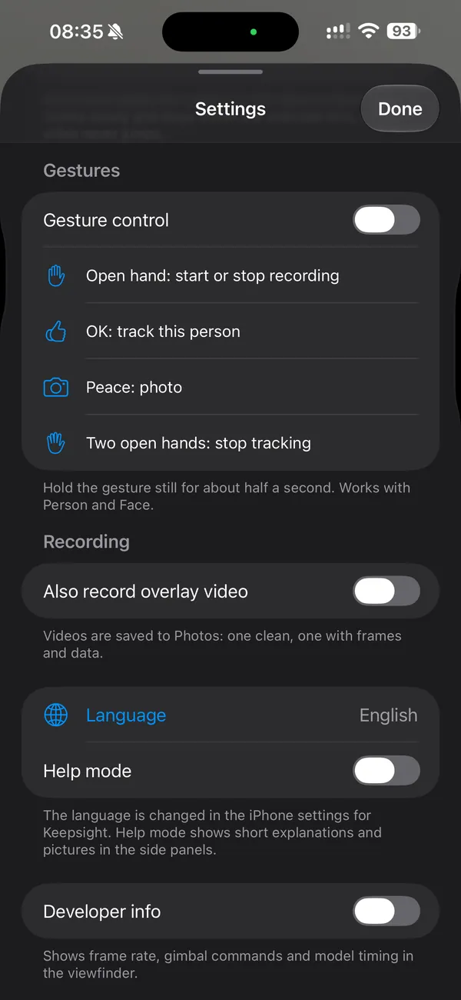

Ajustes e ajuda
Idioma, modo de ajuda e controles para usuários avançados.



Os interruptores mais importantes estão nos dois painéis laterais. Todo o resto fica no painel esquerdo, em Todos os ajustes.
Modo de ajuda
O ponto de interrogação no alto de cada painel lateral ativa o modo de ajuda. Sob os itens do menu aparecem então dicas amarelas com uma explicação curta, e um diagrama nos mais importantes.
Idioma
O Keepsight usa o idioma do seu iPhone. Para escolher outro só para o Keepsight, toque em Idioma em Todos os ajustes. Isso abre os ajustes do iPhone para o Keepsight. Os comandos de voz mudam junto.
Controles para usuários avançados
| Ajuste | Significado |
|---|---|
| Velocidade “Personalizado” | Ganho, amortecimento, velocidade máxima, aceleração e zona de calma do rastreamento. |
| Velocidade mínima | Só para o AK4500: o menor comando ao qual o gimbal ainda reage. Aumente se o gimbal parar em desvios pequenos. |
| Previsão após a perda | Por quanto tempo o gimbal continua girando quando o assunto fica escondido. |
| Direção | Inverter o giro horizontal ou a inclinação. |
| Modelo de detecção | Qual modelo detecta um assunto. RF-DETR Small e YOLOX-S estão disponíveis. |
| Informações do desenvolvedor | Mostra no visor a taxa de quadros, os comandos do gimbal e o tempo de cálculo do modelo. |
| Restaurar padrões | Restaura os controles do rastreamento. |
Sobre e licenças
Aqui você encontra a versão do app, links para este site e as licenças dos modelos de detecção usados.